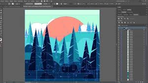

¿Qué es Adobe Illustrator? Adobe Illustrator es un programa utilizado para crear imágenes y gráficos, especialmente aquellos que necesitan ser escalados a cualquier tamaño sin perder calidad, como logotipos, ilustraciones o dibujos digitales. Es una herramienta muy popular entre diseñadores gráficos, pero también es accesible para cualquiera que quiera empezar a crear sus propios diseños.
¿Para qué sirve Adobe Illustrator? Con Illustrator, puedes: Crear logotipos: Puedes hacer logotipos que se vean nítidos y profesionales, sin importar el tamaño. Diseñar ilustraciones: Si te gusta dibujar, Illustrator te permite crear ilustraciones detalladas y coloridas, desde dibujos sencillos hasta obras de arte complejas. Crear iconos y gráficos: Puedes diseñar iconos pequeños o gráficos para sitios web, aplicaciones o presentaciones. Trabajar con texto: Si necesitas diseñar posters, portadas o cualquier cosa que incluya texto, Illustrator ofrece muchas opciones para manipularlo de manera creativa.
Interfaz de Adobe Illustrator La interfaz de Illustrator está dividida en diferentes áreas fáciles de entender: Área de trabajo: Es donde creas y editas tus diseños. Herramientas: A la izquierda tienes las herramientas principales para dibujar, colorear y modificar tu diseño. Paneles: A la derecha puedes ver diferentes opciones para cambiar colores, ajustar detalles o gestionar tus capas de trabajo.
Ventajas de usar Adobe Illustrator Diseños escalables: Los gráficos que creas con Illustrator siempre se verán perfectos, sin importar cuán grandes o pequeños los hagas. Precisión: Puedes ser muy preciso al crear formas y líneas, lo que lo convierte en una herramienta ideal para el diseño profesional. Fácil de usar: Aunque tiene muchas opciones avanzadas, Illustrator es fácil de usar para quienes están empezando, con muchas plantillas y recursos disponibles.
